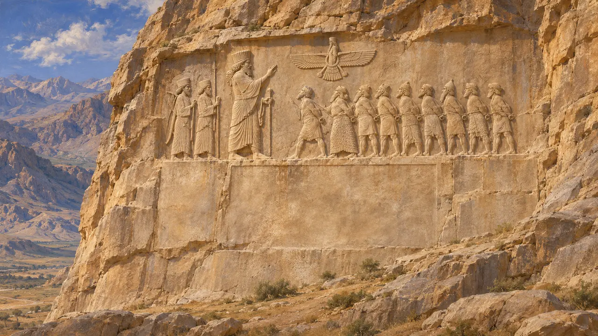
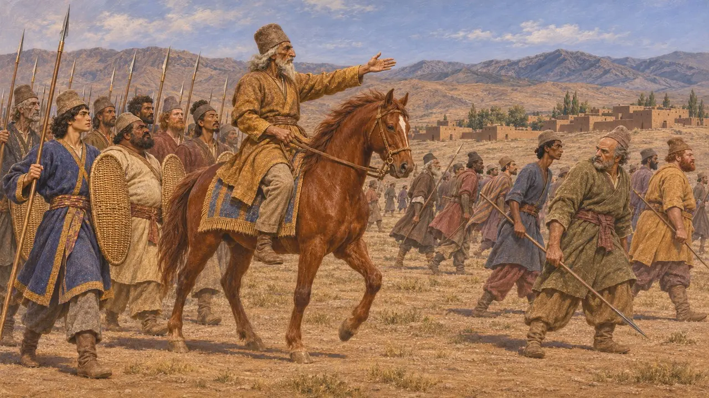
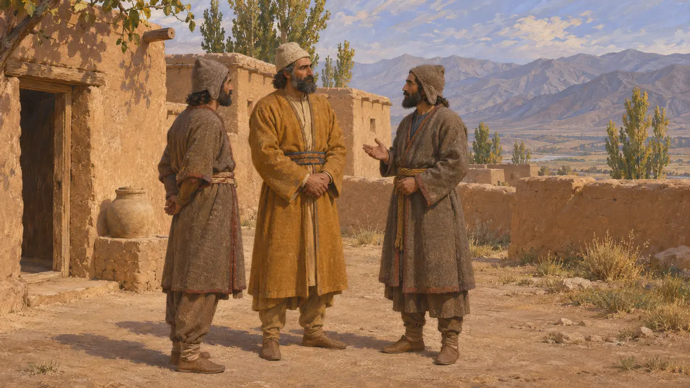
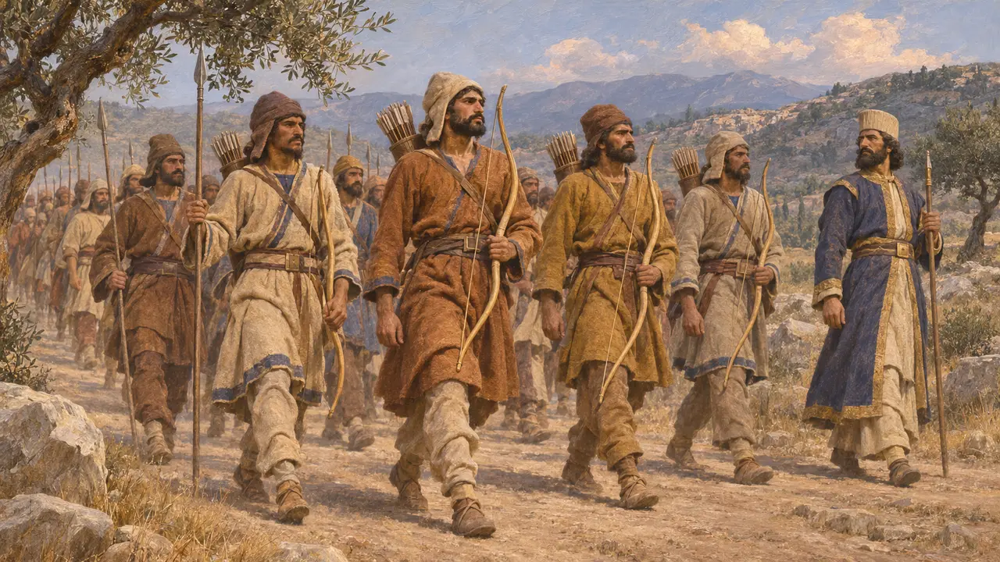
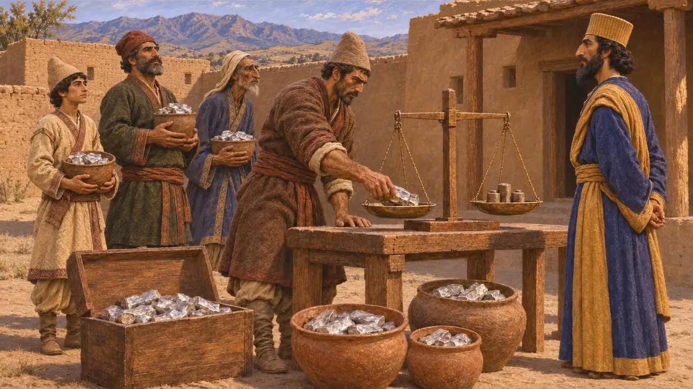
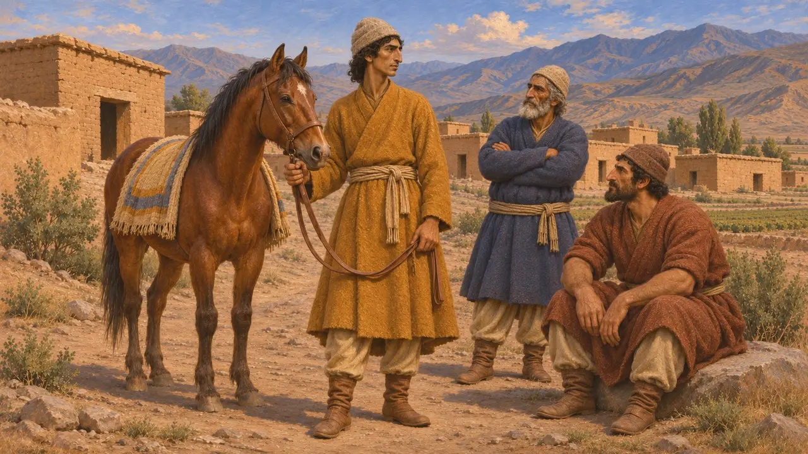

البارثيون
أهل بارثيا (بارثافا)، أرض في شمال شرق الإمبراطورية الفارسية، القرنان السادس والخامس ق.م
في اللعبة: المستوى 3: الكذب
كان البارثيون أهل بارثيا (بالفارسية القديمة بارثافا)، وهي أرض تقع جنوب شرق بحر قزوين. ولم يُسجَّل متى دخلت تحت الحكم الفارسي، لكنها كانت من البلدان الخاضعة لداريوس. وفي 522-521 ق.م انضمت بارثيا إلى الثائر فرافارتيش الميدي، وقاتل هناك هستاسبيس والد داريوس من أجل الملك.
في اللعبة: تذكر اللعبة البارثيين فقط في الحولية والمراسيم وملاحظات الحملات، وليست لهم آلية خاصة بهم سوى ما تعرضه هذه النصوص. ونقش بيستون يعدّ بارثيا فعلًا بين البلدان الثائرة.



لماذا كان هستاسبيس في بارثيا
متنازع عليهلا يعطي نقش بيستون هستاسبيس أي لقب، ولا يقول لماذا كان في بارثيا. ويسمّيه هيرودوت حاكم فارس، وهذا لا يتفق مع تلك الرواية. ولذلك يشك المؤرخون في أكان يتولى قيادة بوصفه واليًا أم كان هناك لسبب آخر، ولا تحسم المصادر المسألة.
Herodotus 3.70; DB §35

بارثيون في جيش خشايارشا
رواية قديمةيذكر هيرودوت البارثيين في الجيش الذي عبر إلى اليونان عام 480 ق.م، يخدمون مع الخوارزميين والصغديين والغندهاريين والداديكيين بقيادة أرتابازوس بن فارناكيس. وأرقامه عن الجيش غير موثوقة، لكن القائمة تبيّن أن الشعوب الشرقية كان يُظن أنها أرسلت مجنّدين.
Herodotus 7.66

جزية الإقليم السادس عشر
متنازع عليهيضع هيرودوت البارثيين والخوارزميين والصغديين والآريين في إقليم ضريبي واحد هو السادس عشر، يؤدي 300 تالنت من الفضة. ويختلف المؤرخون في مدى مطابقة قائمته لترتيبات داريوس الحقيقية، ويعاملونها دليلًا مفيدًا لا سجلًا دقيقًا.
Herodotus 3.93

البارثيون والمملكة البارثية اللاحقة
رواية قديمةنشأت المملكة البارثية للأرشكيين في القرن الثالث ق.م، بعد داريوس بزمن طويل، وكانت دولة مختلفة عن الولاية الفارسية. ولا ينبغي الخلط بين بارثيي العهد الأخميني وبينها.
P. Briant, From Cyrus to Alexander, 2002
المصادر
- Behistun inscription, DB §6, §35-36
- Herodotus 3.93; 7.66
- Naqsh-e Rostam inscription, DNa
- P. Briant, From Cyrus to Alexander, 2002